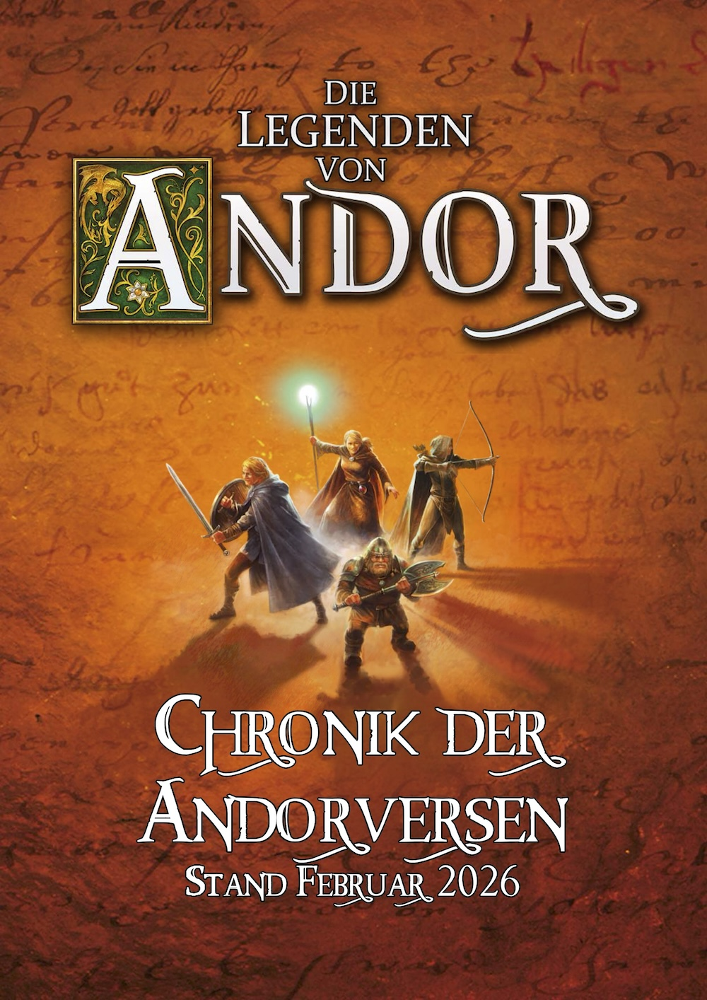
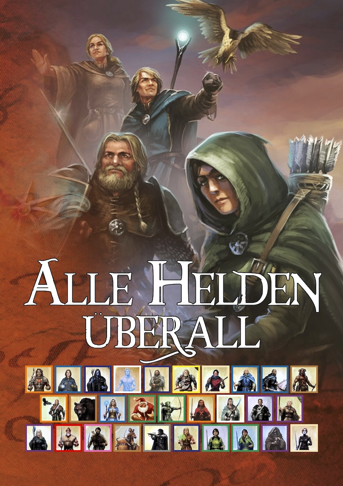
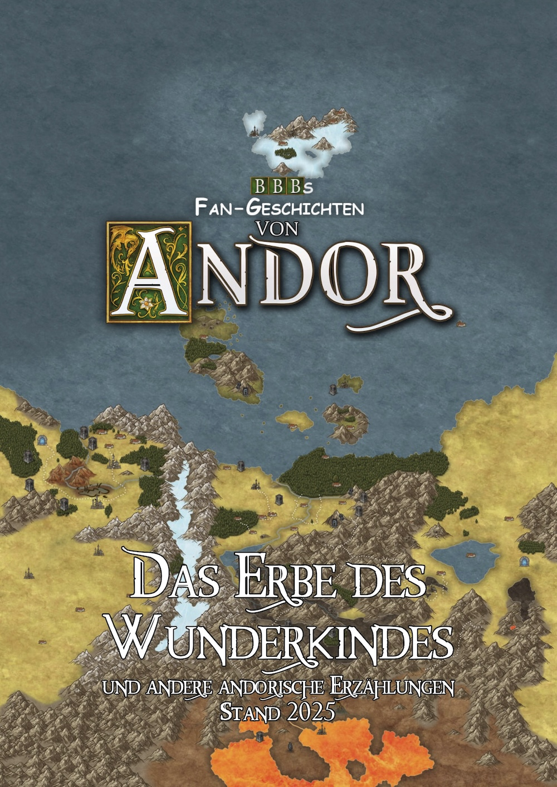

Butterbrotbärs Andor-Atelier
  
Hier findet ihr verschiedene Versionen dieser Projekte. Klickt auf einen Link, um das Dokument als pdf-Datei oder den Quelltext als zip-Datei herunterzuladen.
Chronik der Andorversen
Chronologisch sortiertes Material von den offiziellen "Die Legenden von Andor"-Internetauftritten. In der Taverne: viewtopic.php?f=11&t=10314.
- v26.1 (Februar 2026): Dokument, Quelltext.
- v25.3 (Dezember 2025): Dokument, Quelltext.
- v25.2 (Juni 2025): Dokument, Quelltext.
- v25.1 (März 2025): Dokument, Quelltext.
- Vorherige Versionen findet ihr in der Taverne.
Alle Helden überall
Fan-Spielvariante, um alle offiziellen Andor-Held*innen in (fast) allen offiziellen Andor-Legenden spielbar zu machen. In der Taverne: viewtopic.php?f=8&t=11151.
- v26.2 (April 2026): Dokument, Quelltext.
- v26.1 (Januar 2026): Dokument, Quelltext.
- Vorherige Versionen findet ihr in der Taverne.
Das Erbe des Wunderkindes
Sammlung vieler kurzer Fan-Geschichten aus dem bärig gebutterten Andorversum. In der Taverne: viewtopic.php?f=11&t=10516.
Klickt auf und ich erzähle euch von einer zufälligen Szene aus einer zufälligen Fan-Geschichte in dieser Sammlung (Spoiler-Gefahr, ~14+).
- v25.2 (Dezember 2025): Dokument, Quelltext.
- v25.1 (Dezember 2025): Dokument, Quelltext.
- v23.1 (Dezember 2023): Dokument, Quelltext.
- Vorherige Versionen findet ihr in der Taverne.
Hinweis
Diese Projekte enthalten urheberrechtlich geschütztes Material von den offiziellen Internetauftritten der Marke "Die Legenden von Andor" des KOSMOS Verlags. Ich (Butterbrotbär) wandte mich an Michael Menzel und erhielt die Erlaubnis, dieses Material in dieser Form nicht-kommerziell zu teilen. Alle anderen Rechte bleiben jedoch vorbehalten. Diese Projekte sind Fan-Werke und werden nicht offiziell unterstützt.